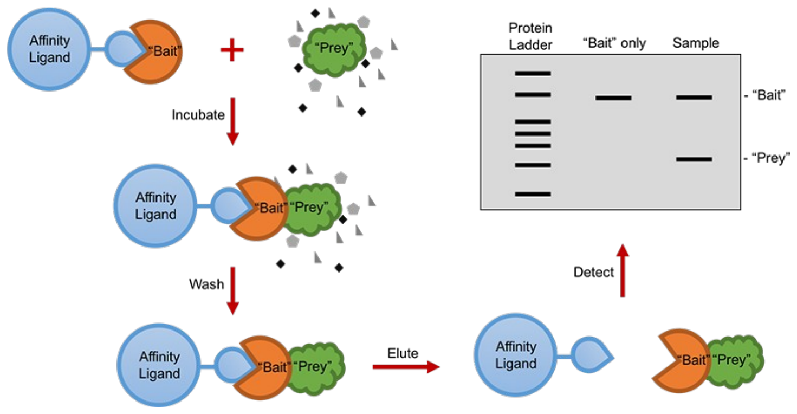
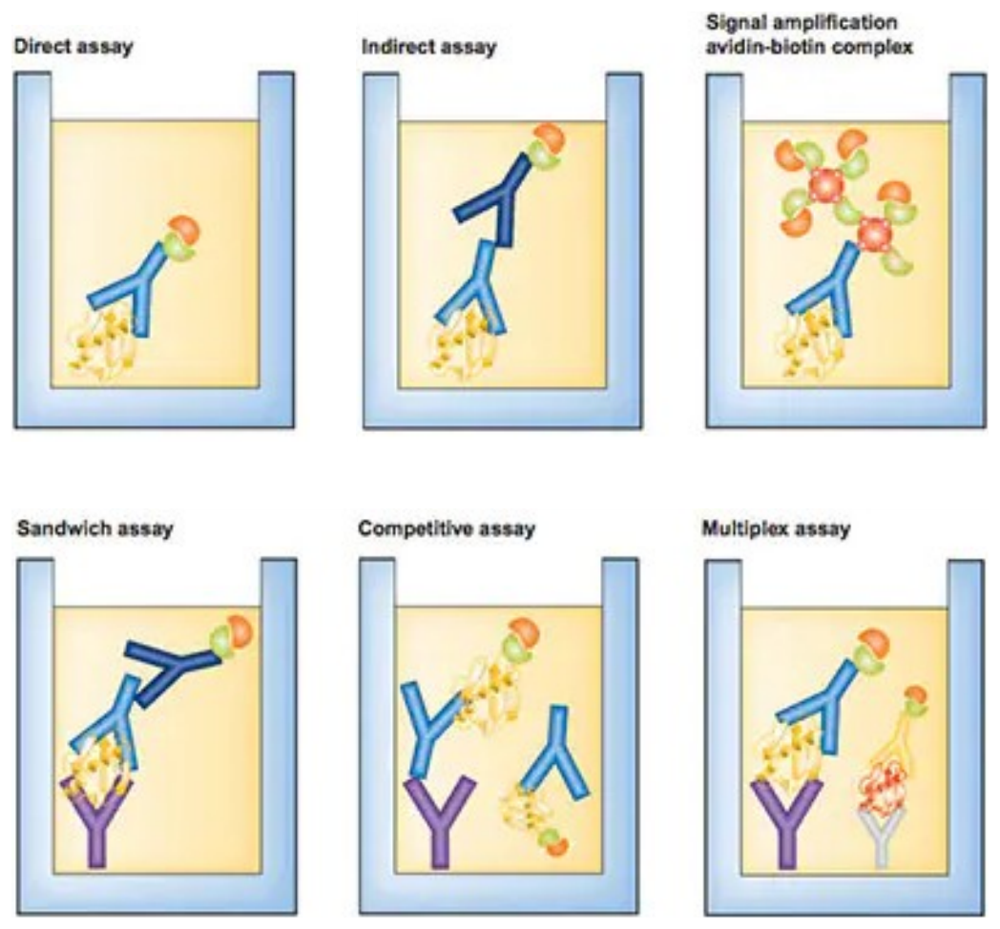
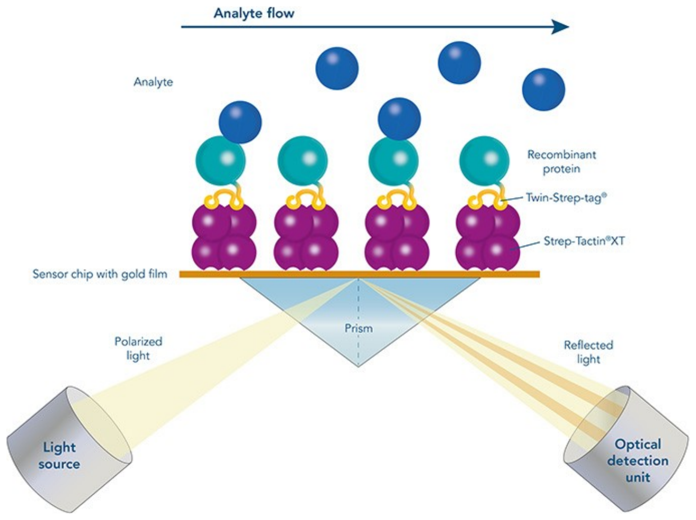
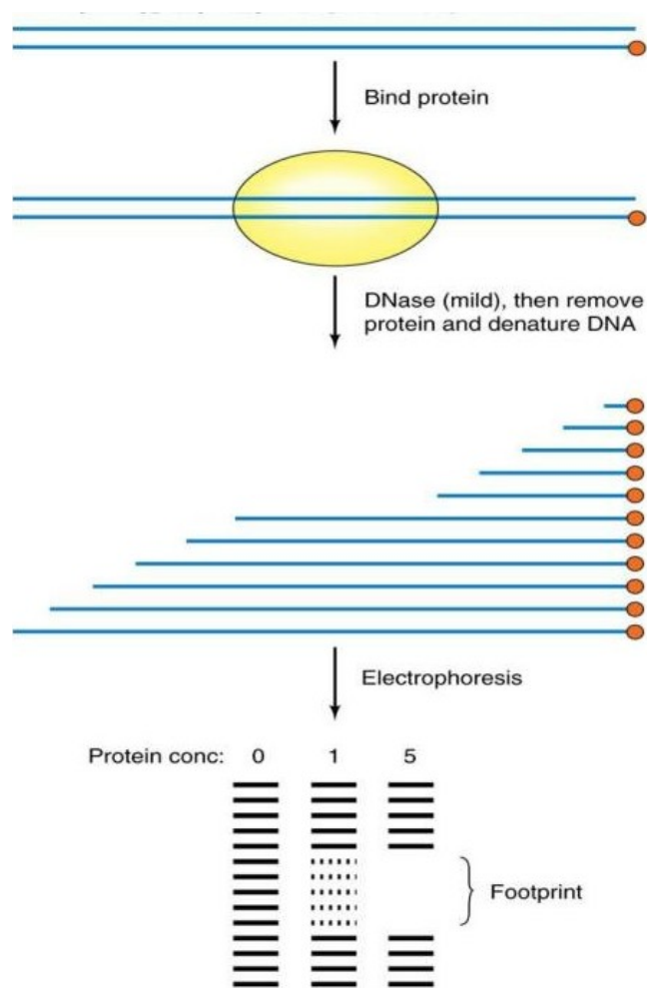

After lifeasible.com
If you want to observe an interaction between two biomolecules (typically two proteins, or one protein and one something else), one workhorse technique is a pulldown assay. We will refer to one of the proteins as the Bait, and the other as the Prey. First, you get the Bait proteinattached to a solid support. Typically, this is done by something like fusing GST to the Bait’s open reading frame to express a fusion protein, which can then be isolated on glutathione beads based on affinity chromatography. You then incubate those beads with a lysate containing the Prey protein amongst other cell goop. If there is a stable interaction, the prey will become attached to the Bait on the Bead, and upon washing it will be retained. Finally, you elute the beads by denaturing them with detergent, and run an SDS-PAGE gel. If there was an interaction, you should get a band for the Prey as well as the Bait. A bait protein on a bead, a lysate washed over it, and an SDS-PAGE gel at the end: a prey band means the two interact.
I am trying to engineer a protein that binds human serum albumin. How can I assay the candidate proteins?
PMID: 18499681

After iba-lifesciences.com
In SPR, you have these gold film-coated chips that you buy as a kit. You get your Bait protein attached to the chip through affinity interactions, and then put it into a special instrument. A common one is called a Biacore. It has a light beam bouncing off the surface of the chip. It also has a flow cell that passes your Prey sample, or a small molecule, or whatever over the surface. If this ‘analyte’ sticks to your Bait protein, the refractive index of the surface changes affecting the amount of light that reaches a detector. The changes in the light are proportional to the concentration of bound analyte. SPR is usually the most quantitative technique. You can also get kinetic information out which is rarely possible with the other methods. A gold chip carrying bait protein, analyte flowing over it, and a light beam reading the refractive index of the surface as the analyte binds.
After slideserve.com
Footprinting methods are used to map where a protein binds to a nucleic acid. So, it is not so much to ask whether the protein is bound, but where is it bound. When a protein binds to a DNA, it blocks reagents from modifying the DNA. Typically, that modifier is DNAse I or chemical mutagens like hydroxylamine. By looking at the pattern of where the modifier reacted, you can deduce where the protein was bound. Footprinting asks not whether a protein is bound but where: it protects its own stretch of DNA from nuclease, and that stretch shows up as a gap in the ladder.I’m trying to make a “cancer cell adhesion device” that displays a Thomsen-Friedenreich antigen binding lectin on E. coli’s surface. It isn’t working, and I think my lectin part might be a dud. What should I make with the lectin part, and what experiment should I do to see if it works?
You can express the lectin with a His tag, purify it, then do a binding assay like ELISA. Question to ponder, on the amber ground: a cancer cell adhesion device displaying a Thomsen-Friedenreich antigen binding lectin on the surface of E. coli is not working, and the lectin part is the suspect. What would you build with that part, and what experiment would show whether it works?